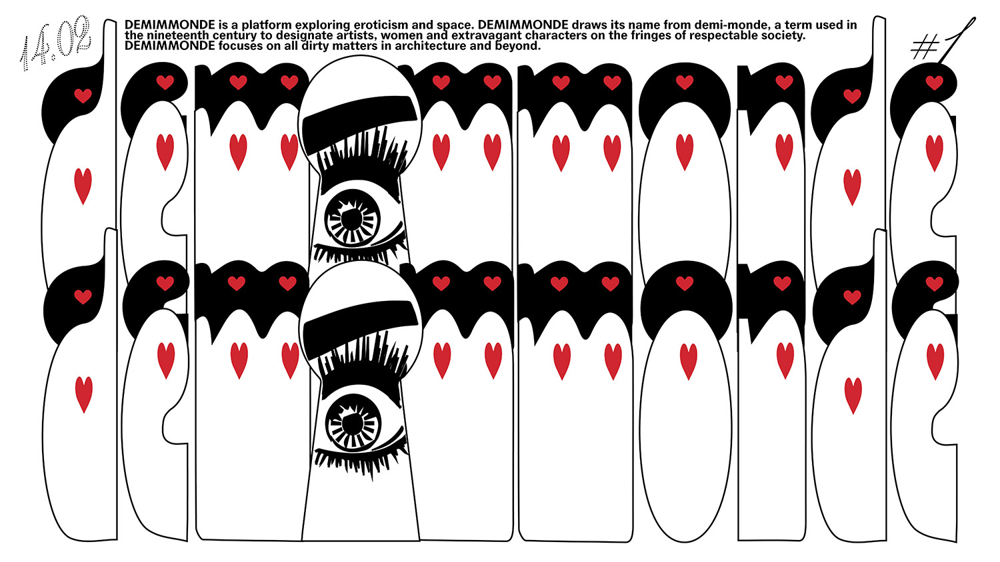

Curatrice/Curator: Federica Buzzi
14 février 2019 / 18h-22h
[l'événement est en anglais]

For all their lovers, suitors, friends, sweethearts, concubines, darlings, admirers, flirts, crushes, DEMIMMONDE is throwing a night of performances, screenings and music in the former swingers club La Porte des Sens - a space of sexual and social transgression, and a metaphor for promiscuous interdisciplinary couplings. The evening program is going to unravel in three chapters: La Porte de l'Impudence, with works presenting radical perspectives on eroticism and sexuality; La Porte de la Dissidence, featuring dissident artistic practices that break with hegemonic narratives; La Porte de Non-Sens, delving into the humorous and surreal aspects of sex. DEMIMMONDE’s inaugural event on St. Valentine's day teases and mocks the highly ritualised system of swinging culture and romantic anniversaries' celebrations. By introducing classical music and references to surrealism, DEMIMMONDE reclaims these 'high' cultural expressions and presents them alongside the hedonistic pleasures of burlesque and techno music in the weirdest queer contemporary art event of all times. FREE, ENGLISH LANGUAGE --- 18:00 – La Porte de l'Impudence Screening: Army of Love by Ingo Niermann/Alexa Karolinski Reading by Alberto García del Castillo 19:30 – La Porte de la Dissidence Screening: Queer Appropriation of Space by VenidaDevenida Sound performance: Pleasure and Deficit by TOMBOYS DON'T CRY (Rosa Maria Alloisio) w/ Tzaziky & Crack 20:30 – La Porte de Non-Sens Screening: Sexblotch by Serge Goldwicht Dj set: Melissa Juice @ MISSFITTE Throughout the evening Burlesque performance by Donna Pavona Three Pieces for Solo Clarinet by Igor Stravinsky played by Daniela Nocentini Proximity by Stef Meul with Chiara Monteverde, Giulia Piana, Alina Arshi and Freek Willems --- [Graphic design: Roxanne Maillet]